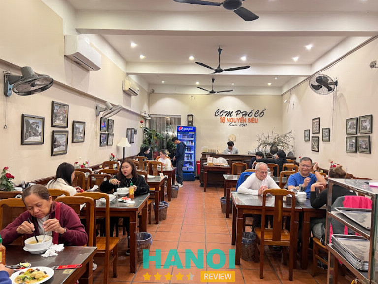
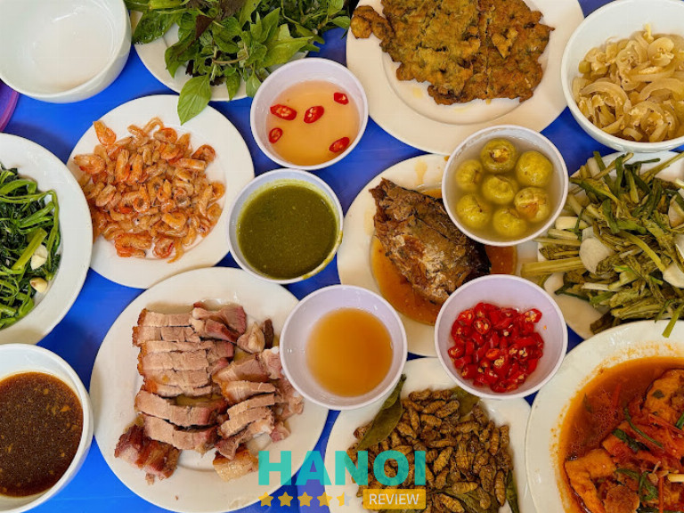
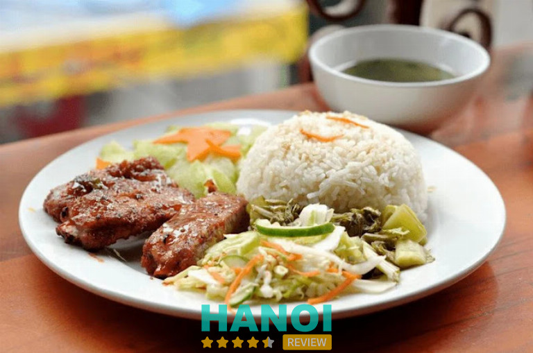
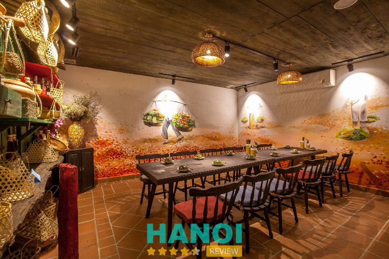
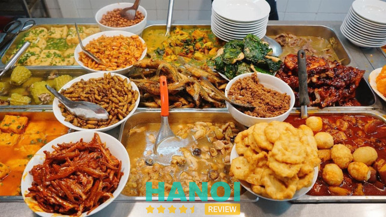
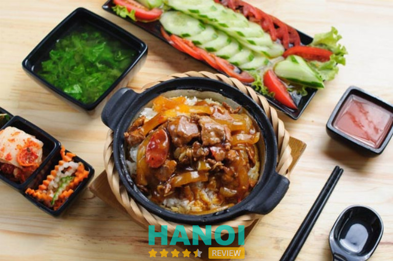
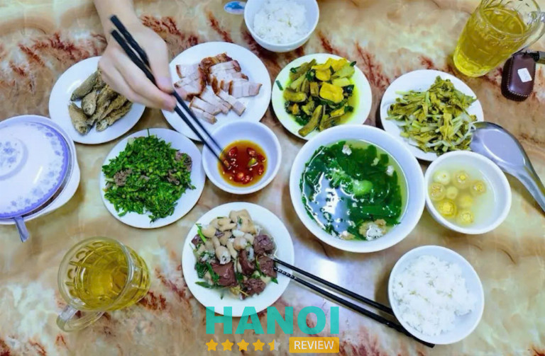
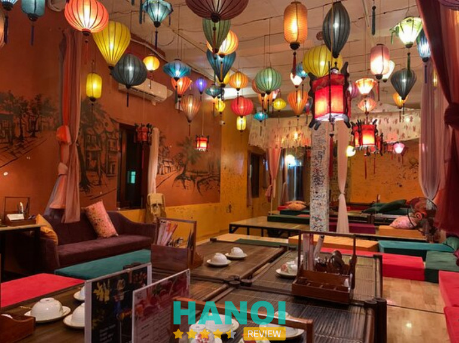
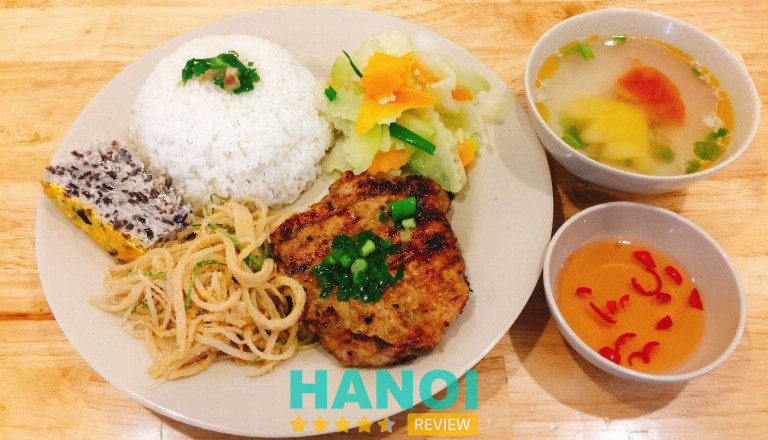

10 Quán cơm ngon tại Phố Cổ Hà Nội đặc trưng vị truyền thống
Đã đến với Phố Cổ Hà Nội ngoài việc tham quan những địa danh nổi tiếng và các khu vui chơi thì bạn nhất định phải khám phá ẩm thực phong phú với các quán cơm ngon chuẩn vị để chuyến đi thêm phần trọn vẹn, ý nghĩa.
Top 10 Quán cơm ngon ở Phố Cổ Hà Nội bạn nên biết
Cuộc sống bộn bề, hối hả đôi lúc ta lại muốn tìm một không gian ấm cúng để thưởng thức những hương vị truyền thống ngày xưa. Và những quán cơm ngon nổi tiếng ở Phố Cổ Hà Nội được nhắc đến sau đây sẽ đưa bạn về với mâm cơm gia đình không chỉ ngon mà còn ấm áp như được trở về với chính gia đình thân yêu của mình.
Quán Cơm Phố Cổ – 16 Nguyễn Siêu
Quán Cơm Phố Cổ là quán cơm ngon nổi tiếng hàng đầu ở Hà Nội, là nơi lý tưởng để thực khách thưởng thức những bữa cơm tròn vị, đậm chất quê nhà.
Quán Cơm Phố Cổ thu hút thực khách nhờ menu đa dạng các món ăn dân giã nhưng lại vô cùng đặc sắc, phù hợp với khẩu vị của mọi khách hàng, hơn nữa, thực đơn được thay đổi và cập nhật thường xuyên theo ngày, theo mùa để thực khách luôn cảm thấy mới mẻ, không bị nhàm chán.

Đến đây nhất định bạn phải nếm thử món sườn nướng đậm đà, được những người đầu bếp giỏi, giàu kinh nghiệm chế biến thơm ngon đặc biệt, ăn cùng cơm nóng thì không có điểm gì để chê được.
Điểm làm lên thành công cho quán cơm này là việc sử dụng nguyên liệu tươi ngon, trải qua quá trình lựa chọn kĩ càng, chế biến tỉ mỉ, vừa giữ được hương vị đặc trưng trong các món ăn vừa đảm bảo vệ sinh an toàn thực phẩm.
Quán Cơm Phố Cổ còn gây ấn tượng với thực khách bởi cung cách phục vụ chuyên nghiệp, tận tâm, nhiệt tình và chu đáo của đội ngũ nhân viên ở đây.
Ngoài ra không gian thoáng đãng, mát mẻ với cây cối xung quanh bao phủ cũng là điểm cộng giúp mỗi khách hàng đến đây luôn cảm thấy thoải mãi, thư giãn sau những giờ làm việc căng thẳng.
Thông tin liên hệ:
- Địa chỉ: 16 P. Nguyễn Siêu, Hàng Buồm, Hoàn Kiếm, Hà Nội
- Điện thoại: 0368 192 826
- Email: Comphoco@gmail.com
- Fanpage: FB.com/comphoco/
- Giờ mở cửa: 10h30 – 14h & 18h – 21h
Tiệm cơm Vinh Thu – 14 Lý Thường Kiệt
Là một trong những tiệm cơm có lịch sử ra đời lâu nhất ở khu Phố Cổ Hà Nội, Tiệm cơm Vinh Thu chuyên về món ăn Việt truyền thống sẽ đưa bạn bước vào thế giới của những mâm cơm nhà tinh túy.
Tiệm cơm Vinh Thu nổi tiếng với thực đơn đa dạng với gần 50 món ăn dân giã khác nhau như cá kho tiêu, thịt rang cháy cạnh, tôm rim, chả lá lốt, kho quẹt tôm thịt, cà pháo, dưa chua,…món nào cũng được chế biến tỉ mỉ theo công thức độc quyền làm vừa lòng cả những thực khách sành ăn nhất.

Tất cả các món ăn ở Tiệm cơm Vinh Thu đều được chế biến bởi đôi bàn tay tài ba, khéo léo của đội ngũ lâu năm, giàu kinh nghiệm, sáng tạo không ngừng để đem đến một hương vị đặc trưng không bị nhầm lẫn với bất kì nơi đâu.
Quán lúc nào cũng đông khách bởi phong cách phục vụ nhiệt tình, niềm nở, chu đáo, nguyên liệu tươi sạch, được lựa chọn kĩ càng, đảm bảo vệ sinh an toàn thực phẩm.
Quán được thiết kế đơn giản, với bàn ghế nhựa được xếp ngăn nắp, gọn gàng, quán có cả không gian trong nhà và ngoài trời để thực khách lựa chọn, không gian rộng rãi, sạch sẽ cũng là điểm cộng của quán ăn này.
Quán ăn cũng có mức giá phải chăng, phù hợp với mọi đối tượng khách hàng khác nhau. Quán lúc nào cũng đông nghịt khách do vậy đôi lúc khách hàng đến đây vẫn phải chờ đợi.
Thông tin liên hệ:
- Địa chỉ: 14 Lý Thường Kiệt, Hoàn Kiếm, Hà Nội
- Điện thoại: 094 337 77 89
- Fanpage: FB.com/tiemcomvinhthu/
- Giờ mở cửa: 11h00 – 21h00
Cơm sườn Đào Duy Từ – 47 Đào Duy Từ
Nhắc đến quán cơm ngon nổi tiếng tại Phố Cổ Hà Nội không thể không nhắc tới Cơm sườn Đào Duy Từ. Được khách hàng đánh giá cao cả về hương vị lẫn chất lượng các món ăn, quán ăn luôn được ưu tiên lựa chọn khi muốn thưởng thức các bữa cơm ngon chuẩn vị.
Sở hữu không gian rộng rãi, gồm 3 tầng, được trang trí tinh tế với những bức tranh Phố Cổ cùng bàn ghế gỗ mộc mạc như đưa thực khách về với Hà Nội xưa.

Ngoài ra quán cũng được trang bị máy lạnh nên thực khách đến đây vào mùa hè không lo bị nóng, đội ngũ nhân viên phục vụ nhiệt tình, chu đáo làm hài lòng mọi khách hàng.
Không chỉ ghi điểm bởi không gian độc đáo, ấn tượng, Cơm sườn Đào Duy Từ còn làm nức lòng thực khách bởi thực đơn các món ăn đa dạng, hấp dẫn được chế biển tỉ mỉ bởi những người đầu bếp tận tâm, chuyên nghiệp.
Nguyên liệu sử dụng tại quán được nhập mới mỗi ngày và lựa chọn cẩn thận, có nguồn gốc rõ ràng, đảm bảo chất lượng tuyệt đối, an toàn vệ sinh thực phẩm.
Ngoài cơm sườn các loại, quán ăn này còn phục vụ thêm nhiều món ăn khác cũng vô cùng hấp dẫn cùng đa dạng các loại đồ uống với mức giá phải chăng, giúp bạn có những trải nghiệm hoàn hảo nhất.
Thông tin liên hệ:
- Địa chỉ: 47 Đào Duy Từ, Hoàn Kiếm, Hà Nội
- Điện thoại: 0904 113 553
- Website: comsuon47.com
- Fanpage: FB.com/comsuondaoduytu
- Giờ mở cửa: 10h – 22h30
GỢI Ý: 10 Quán cơm văn phòng ở Hà Nội ngon, không gian đẹp
ẦU Ơ Vietnam Kitchen – 15 Lý Thường Kiệt
Nếu tách biệt khỏi những khu phố ồn ào để trở về với hương vị ký ức xưa ngọt ngào thì bạn hãy đến với quán ẦU Ơ Vietnam Kitchen – một thiên đường ẩm thực dành cho những người đam mê những mâm cơm mẹ nấu ngày xưa.

Sở hữu thực đơn với 100 món ăn quê hương bình dị, thân thuộc như cá kho nồi đất, canh chua, rau muống xào tỏi, đậu rán, cà muối, dưa chua,…gợi cho ta nhớ về những bữa cơm gia đình đầm ấm nơi quê nhà.
Không chỉ thút hút thực khách bởi những mâm cơm gia đình bình dị, ẦU Ơ Vietnam Kitchen còn gây ấn tượng bởi các món ăn độc đáo mà chỉ cần nếm thử một lần đã khiến bạn nhớ mãi không thôi, đặc biệt nhất phải kể đến sườn non cuộn sả nướng ngũ vị, cua sốt tiêu, vịt trời, vườn rau kho quẹt,….
Để làm lên những những món ăn hấp dẫn, chinh phục mọi khách hàng phải kể đến đội ngũ đầu bếp chuyên nghiệp, khéo léo và sáng tạo không ngừng, đặc biệt là khâu lựa chọn nguyên liệu tươi ngon, chất lượng, đảm bảo vệ sinh.
Ngay từ khi bước vào ẦU Ơ Vietnam Kitchen khách hàng sẽ phải ngạc nhiên trước lối kiến trúc nhà vườn cùng cách bày trí tinh tế, hài hòa, pha lẫn giữa nét đẹp cổ điển và hiện đại, đồ dùng vật dụng mộc mạc, gần gũi tất cả hòa quyện tạo lên một không gian ẩm thực đâm chất quê hương đem đến cho khách hàng những giây phút yên bình, thư giãn.
Với sức chứa lớn, quán còn có thể phục vụ cho cả những buổi liên hoan, tiệc tùng, sinh nhật,…Quán cũng có cả không gian sân vườn ngoài trời thoáng đãng đến phòng riêng yên tĩnh cho những ai cần sự riêng tư.
Thông tin liên hệ:
- Địa chỉ: 15 Lý Thường Kiệt, Hoàn Kiếm, Hà Nội
- Điện thoại: 0865 907 386
- Email: auovietnamkitchen@gmail.com
- Giờ mở cửa: 10:30 – 14:00 & 17:00 – 22h00
Quán Cơm Tay Cầm – ngõ 5 Tràng Tiền
Nằm trong ngõ Tràng Tiền khu vực quận Hoàn Kiếm, Quán Cơm Tay Cầm là một trong những quán cơm ngon nổi tiếng được đông đảo du khách trong và ngoài nước đánh giá cao.
Sở dĩ quán có cái tên độc đáo như vậy là bởi cơm và đồ ăn ở đây được nấu trong niêu hoặc thố đất, nồi đất có tay cầm, từng hạt cơm dẻo, dai kết hợp với nhiều loại topping tùy chọn như xá xíu, thịt gà, trứng gà, tôm rim, thịt bò,… tạo lên những hương vị đặc trưng, độc đáo không lẫn vào đâu được.
Món ăn ở đây được chế biến rất công phu, tỉ mỉ, đẹp mắt bởi những đội ngũ đầu bếp lâu năm, am hiểu sâu sắc về ẩm thực, sáng tạo không ngừng để có thể làm vừa lòng mọi thực khách.
Đặc biệt nhất, Quán Cơm Tay Cầm cũng là nơi Ngoại trưởng Mỹ ghé thăm, thưởng thức món ăn và được đánh giá là vô cùng thơm ngon, đặc sắc, càng làm nổi bật nên nét ẩm thực đa dạng của Việt Nam.
Ngoài ra, khi bước chân vào quán, thực khách cũng sẽ cảm nhận không khí được ấm cúng, thân quen từ những bàn ghế gỗ, các đồ dùng mộc mạc, gần gũi, gợi cho ta nhớ về chốn quê hương yên bình.
Không những vậy, thưởng thức bữa ăn tại Quán Cơm Tay Cầm thực khách còn thấy thoải mái, dễ chịu bởi cung cách phục vụ thân thiện, chu đáo của đội ngũ nhân viên chuyên nghiệp và mức giá phải chăng.
Thông tin liên hệ:
- Địa chỉ: ngõ 5 Tràng Tiền, Hoàn Kiếm, Hà Nội
- Điện thoại: 0965 168 404
- Giờ mở cửa: 08:00 – 23:59
Tiệm Cơm Một Ngày Mới – 72 Mã Mây
Được đánh giá là một quán cơm nhà “chuẩn vị mẹ nấu” nổi tiếng nhất tại Phố Cổ Hà Nội, Tiệm Cơm Một Ngày Mới được mở từ năm 1996 và đã trở thành điểm đến quen thuộc của đông đảo người dân cũng như du khách.
Đến tiệm bạn sẽ có cơ hội thưởng thức thực đơn với hơn 50 món được chế biến tỉ mỉ bởi bàn tay tài hoa, khéo léo của những người đầu bếp chuyên nghiệp, giàu kinh nghiệm, trong số đó nhất định bạn phải thử món sườn xào chua ngọt, cá trắm kho riềng, thịt quay giòn bì, mắm tép chưng thịt,….

Không chỉ ngon miệng, phù hợp với khẩu vị của mọi thực khách, các món ăn ở đây còn được trình bày vô cùng đẹp mắt, được chế biến từ những nguyên liệu tươi ngon, chất lượng hàng đầu và đặc biệt thực đơn còn thay đổi theo ngày để thực khách không bị nhàm chán.
Quán còn ghi điểm nhờ không gian rộng rãi, thoáng mát, bàn ghế gỗ được kê ngay ngắn, ngăn nắp và lúc nào cũng sạch sẽ, hơn nữa có cả không gian trong phòng yên tĩnh cho những ai cần sự riêng tư.
Ngoài món ăn ngon, chất lượng, không gian tinh tế, Tiệm Cơm Một Ngày Mới còn gây ấn tượng bởi thái độ phục vụ chuyên nghiệp, tận tình của đội ngũ nhân viên, luôn sẵn sàng lắng nghe và phục vụ chu đáo, làm hài lòng mọi khách hàng.
Sở hữu nhiều ưu điểm như vậy nhưng mức giá ở đây lại khá phải chăng, phù hợp với mọi đối tượng khác nhau do vậy nên tiệm lúc nào cũng đông nghịt khách ra vào nhất là du khách nước ngoài.
Thông tin liên hệ:
- Địa chỉ: 72 Mã Mây, Hoàn Kiếm, Hà Nội
- Điện thoại: 0913 312 772
- Fanpage: FB.com/NewdayRestaurant72MM
- Giờ mở cửa: 10:00 – 22:30
THAM KHẢO: 10 Quán cơm gia đình tại Hà Nội ngon, không gian ấm cúng
Cơm Thố Anh Nguyễn
Được thành lập từ năm 2015 đến nay đã phát triển với 50 cơ sở trên toàn quốc, quán Cơm Thố Anh Nguyễn là một gợi ý hoàn hảo tiếp theo nếu bạn đang tìm quán cơm ngon nổi tiếng ở Phố Cố Hà Nội.
Nghe tên thực khách dễ lầm tưởng quán ít đồ ăn để lựa chọn, tuy nhiên khi đến đây chắc chắn bạn sẽ phải ngỡ ngàng trước thực đơn vô cùng đa dạng, bạn có thể chọn cơm thố gà nướng, cơm thố bò, cơm thố xá xíu, cơm thố gà quay, sườn nướng, trứng ốp la,…mà món nào vô cùng đặc sắc.
Từng món ăn ở đây được chế biến tỉ mỉ từng bước bởi những người đầu bếp tận tâm, giàu kinh nghiệm, khéo léo trong cách kết hợp gia vị mang đến hương vị đỉnh cao, phù hợp với khẩu vị của mọi thực khách.

Không những vậy bằng nguyên liệu tươi ngon, được chọn lọc kĩ càng từ nguồn chất lượng, Cơm Thố Anh Nguyễn cam kết sẽ đem đến cho thực khách những bữa ăn đáng nhớ.
Đội ngũ nhân viên phục vụ chu đáo, tận tâm, lịch sự, luôn lắng nghe và đáp ứng mọi yêu cầu cũng góp phần đem đến cho thực khách giây phút thưởng thức ẩm thực thú vị, hoàn hảo.
Không gian rộng rãi, thoáng mát, được bày trí giản dị nhưng ấm cúng cũng là điểm cộng tạo nên không khí thân quen để mỗi khi đến đây thực khách luôn cảm thấy gần gũi, thoải mái.
Thông tin liên hệ:
- Địa chỉ: P. Cầu Gỗ, Hàng Bạc, Hoàn Kiếm, Hà Nội
- Điện thoại: 0234 8889 933
- Email: comthoanhnguyenvn@gmail.com
- Website: comthoanhnguyen.com.vn
- Fanpage: FB.com/comtho.anhnguyen
- Giờ mở cửa: 09:30 – 21:50
Cơm Lý – 6 Lê Văn Hưu
Thêm một quán cơm nổi tiếng ở Phố Cổ Hà Nội mà bạn không nên bỏ lỡ nếu đột nhiên thèm những mâm cơm gia đình chuẩn vị xưa đó là tiệm Cơm Lý. Nơi đây ghi điểm với thực khách với thực đơn đa dạng, đầy đủ dinh dưỡng và giá phải chăng.
Chẳng phải những món ăn quá cầu kỳ, cao sang, chỉ với những nguyên liệu tươi ngon, cách chế biến khéo léo mà tiệm cơm Lý Vân vẫn thu hút được rất nhiều thực khách. Hơn nữa thực đơn ở đây được thay đổi theo ngày và theo mùa mang đến nhiều trải nghiệm mới mẻ.

Đến tiệm cơm Lý, thực khách có thể gọi theo suất hoặc gọi từng món riêng theo sở thích của mình, những món ăn đặc sắc nhất của quán mà ai ăn cũng tấm tắc khen ngon phải kể đến như canh chua, cá kho nồi đất, rau muống xào tỏi, thịt kho cháy cạnh,…
Đến đây thực khách cũng hoàn toàn yên tâm về khâu vệ sinh an toàn thực phẩm bởi tiệm Cơm Lý cam kết chỉ sử dụng nguyên liệu tươi sạch từ nguồn uy tín, nói không với đồ đông lạnh, không rõ nguồn gốc rõ ràng.
Không chỉ thu hút thực khách ở những món ăn ngon, không gian thoáng mát, sạch sẽ, bàn ghế ngăn nắp cũng là điểm cộng giúp tiệm cơm này ghi điểm với khách hàng.
Đặc biệt, đội ngũ nhân viên được đào tạo bài bản, phục vụ nhanh chóng, nhiệt tình, không để khách hàng phải chờ đợi lâu cũng góp phần đem đến trải nghiệm hoàn hảo.
Thông tin liên hệ:
- Địa chỉ: 6 P. Lê Văn Hưu, Phan Chu Trinh, Hoàn Kiếm, Hà Nội
- Điện thoại: 098 866 99 96
- Email: daica_deptrai297@yahoo.com
- Fanpage: FB.com/comvanphongngonbore/
- Giờ mở cửa: 08:00 – 22:00
Nhà hàng Quán Quê – 80 Mã Mây
Nhà hàng Quán Quê cũng là một cái tên không thể thiếu trong danh sách những quán cơm ngon nổi tiếng ở Phố cổ Hà Nội. Với không gian được thiết kế tinh tế như một bức tranh đậm chất quê thực khách đến đây luôn cảm thấy yên bình sau những giờ làm việc vất vả.

Nét độc đáo trong ẩm thực của Quán Quê là từ những nguyên liệu vô cùng bình dị, thân quen nhưng khi qua bàn tay tài hoa của những người đầu bếp chuyên nghiệp, khéo léo trong cách kết hợp gia vị đã tạo lên hương vị đặc sắc, nồng nàn vị quê.
Thực đơn ở đây thay đổi thường xuyên, mùa nào thức nấy nên luôn giữ được những gì tinh túy, tươi ngon nhất để thực khách có những trải nghiệm ẩm thực tuyệt vời.
Không chỉ chú trọng đến chất lượng món ăn, nhà hàng Quán Quê còn chú trọng đến cảm nhận của khách hàng thông qua cách bày trí không gian ấm cúng, đẹp mắt, tạo cho khách hàng một thoải mái dễ chịu khi đến thưởng thức các món ăn.
Ngoài ra, nhân viên phục vụ thân thiện, tận tâm và chu đáo cũng là một trong những ưu điểm nổi bật của nhà hàng này. Bên cạnh đó mức giá lại khá phải chăng, phù hợp với mọi khách hàng.
Thông tin liên hệ:
- Địa chỉ: 80 P. Mã Mây, Hàng Buồm, Hoàn Kiếm, Hà Nội
- Điện thoại: 0916 400 858
- Email: quanque80hn@gmail.com
- Website: quanquerestaurant.vn
Xem thêm: 5 Quán cơm tấm tại Hà Nội chuẩn vị thơm ngon, giá cả phải chăng
Cơm Tấm Sáu Dô
Nếu là tín đồ đam mê cơm tấm thì quán Cơm Tấm Sáu Dô ở Phố Cổ Hà Nội chắc hẳn sẽ điểm đến hoàn hảo cho bạn. Đây được đánh giá là một trong những quán cơm tấm ngon chuẩn vị mà bạn không nên bỏ lỡ.
Bước vào quán bạn đã ngửi thấy mùi thơm lừng của thịt nướng, chả bì khiến bạn chỉ muốn thưởng thức ngay. Đĩa cơm dẻo thơm mềm mềm vừa ăn, kết hợp cùng sườn nướng béo ngậy hay thanh chả thơm ngon và trứng ốp la ăn kèm đồ chua chắc chắc sẽ khiến bạn nhớ mãi không quên.
Cơm tấm ở đây được chế biến tỉ mỉ, đẹp mắt bởi những người đầu bếp tài năng, khéo léo cùng nguyên liệu tươi ngon, chất lượng, đảm bảo vệ sinh an toàn thực phẩm nên thực khách hoàn toàn có thể yên tâm.

Không gian quán rộng rãi, thoáng mát, bàn ghế sạch sẽ, ngăn nắp cũng tạo cho thực khách cảm giác thư thái, thoải mái sau những ngày lao động vất vả, căng thẳng.
Quán cũng có cả đồ tráng miệng, phục vụ các loại nước uống với mức giá rất phải chăng, phù hợp với mọi đối tượng khách hàng dù là sinh viên hay người đi làm.
Đội ngũ nhân viên phục cụ ở đây cũng được đánh giá cao bởi sự nhiệt tình, chu đáo, niềm nở với khách, đây cũng chính là một trong những lý do quán ngày càng thu hút được nhiều thực khách hơn.
Thông tin liên hệ:
- Địa chỉ: 2 Ngõ Tràng Tiền, Tràng Tiền, Hoàn Kiếm, Hà Nội
- Điện thoại: 0942 241 636
- Email: comtamsaudo@gmail.com
- Fanpage: FB.com/comtamsaudo/
- Giờ mở cửa: 10:00 – 21:00
7 Lưu ý khi để chọn được quán cơm ngon, đặc trưng vị truyền thống tại Phố Cổ Hà Nội.
Phố Cổ Hà Nội không chỉ thu hút du khách bởi những cảnh đẹp cổ kính mà còn được đánh giá cao bởi văn hóa ẩm thực đa dạng, hấp dẫn, nhất là những quán cơm chuẩn vị truyền thống luôn được yêu thích.
Dưới đây là những lưu ý giúp bạn chọn được quán cơm chất lượng để chuyến đi của bạn thêm trọn vẹn hơn.
- Thực đơn đa dạng: Chọn quán cơm có thực đơn đa dạng, nhiều món ăn được chế biến tỉ mỉ, trình bày đẹp mắt sẽ giúp thực khách có thêm nhiều lựa chọn phù hợp với khẩu vị cũng như trải nghiệm phong phú hơn.
- Chất lượng món ăn: Một điều quan trọng nhất mà thực khách nào cũng quan tâm đó là chất lượng đồ ăn, nên chọn quán cơm sử dụng nguyên liệu tươi, sạch, nguồn gốc rõ ràng, đảm vảo vệ sinh an toàn thực phẩm.
- Không gian quán: Một quán ăn có không gian rộng rãi, thoáng mát, sạch sẽ và gọn gàng giúp thực khách cảm thấy thoải mái, thư thái trong suốt quá trình thưởng thức đồ ăn.
- Thái độ phục vụ: Với đội ngũ nhân viên phục vụ chuyên nghiệp, nhiệt tình, chu đáo sẽ giúp khách hàng có những trải nghiệm hoàn hảo, và hài lòng.
- Giá cả hợp lý: Dù là khu du lịch với nhiều du khách trong và ngoài nước nhưng cũng không vì vậy mà quán cơm chặt chém khách hàng, hãy tìm hiểu và so sánh mức giá các quán cơm khác nhau để có được sự lựa chọn phù hợp, xứng đáng.
- Đánh giá từ khách hàng: Việc tham khảo những đánh giá, nhận xét của khách hàng cũ trên các trang mạng xã hội hoặc qua người thân, bạn bè sẽ giúp bạn dễ dàng tìm thấy các quán cơm chất lượng, dịch vụ chuyên nghiệp.
- Vị trí thuận tiện: Chọn quán cơm ở vị trí dễ tìm, thuận tiện cho việc đi lại cũng góp phần giúp bạn có được chuyến đi hoàn hảo và đáng nhớ.
Thay vì đến các nhà hàng sang trọng, thưởng thức các món ăn đắt tiền, hoặc các món nướng, lẩu… cầu kỳ, bạn có thể “đổi gió” một chút với các quán cơm hương vị truyền thống chắc chắn sẽ đem lại cho bạn cảm giác gần gũi, ấm cúng như được quay về với ký ức, kỷ niệm đẹp bên người thân yêu.
Có thể bạn quan tâm
- 15 Quán Cafe Phố Cổ nhất định phải thử khi đến Hà Nội
- 10 Quán bún đậu mắm tôm Phố Cổ Hà Nội ngon nổi tiếng, lâu đời
- 10 Quán phở gà Phố Cổ lâu đời, nhất định phải thử khi đến đây
- 10 Tiệm bánh mì tại Phố Cổ ngon nổi tiếng, hút khách nhất
DOANH NGHIỆP: Đăng tải thông tin MIỄN PHÍ.
Tin đọc nhiều


5 Quán Cafe Rooftop ở Hà Nội view ngắm cảnh chill, lãng mạn
Với "chiếc view triệu đô" cực chill, lãng mạn và đồ uống thơm ngon, các quán Cafe Rooftop ở Hà Nội là điểm hẹn tuyệt...
10 Quán lươn ngon tại Hà Nội chuẩn vị, không thể bỏ qua
Đâu là quán lươn ngon tại Hà Nội chuẩn vị, không thể bỏ qua là câu hỏi được nhiều người quan tâm. Bạn nên tìm...

10 Quán cafe view Hồ Gươm cực đẹp, đáng checkin nhất
Những quán cafe view Hồ Gươm luôn thu hút đông đảo du khách và người dân địa phương nhờ có không gian tuyệt đẹp với...

15 Quán Cafe Phố Cổ nhất định phải thử khi đến Hà Nội
Khi đến Hà Nội, ngoài việc khám phá những di tích lịch sử, không thể bỏ qua trải nghiệm ngồi tại những quán cafe Phố...

Trở thành người đầu tiên bình luận cho bài viết này!